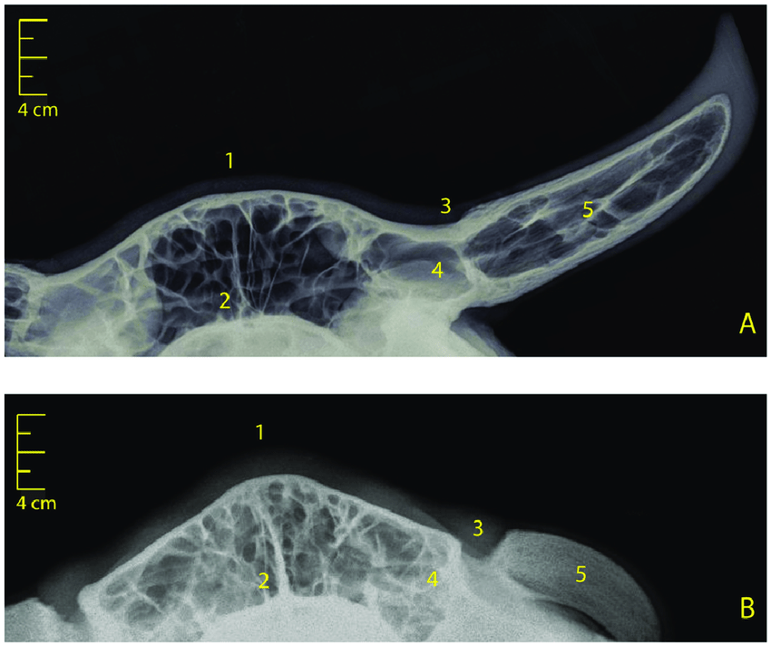
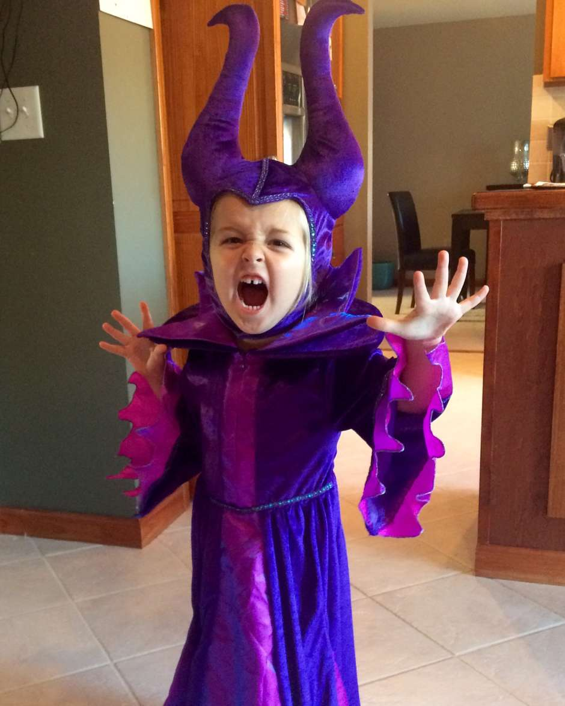

Smartphones Give Teens Horns
Too Much Cell Phone Use Grows Bumps on Heads, Renaissance Students Find
By Bailey and Jazzmin
Teenagers are often demonized in one way or another, but a recent study gave a whole new meaning to the term “little devils”.
Smartphones are giving teens horns from slouching.. “You may be hunched over your phone right now, worrying about reports that young people are growing horns on their skulls from spending too much time hunched over smartphones”, said Springfield chiropractor George Bailey. “Just look at this X-ray if you want to be hunch back then you’ll get a hunched back and horns, if you don’t want to slouch then you might have a 4% chance of not getting a hunch back nor the horns”, said Springfield chiropractor George Bailey.
Parents have been noticing the strange bumps for a while now, and while horrified, are not very surprised when they learn about the reason.
“Because of the time they spent alone during the pandemic, there is not much we can do about student cell phone use,” said one Renaissance parent. “Whenever my kids get home, they rush straight to their cell phones and lock in for the evening. Sometimes they don’t leave their rooms to get dinner. Last week, I found a bowl of urine in the middle of my son Trevor’s room.”
What parents find even more alarming is the ages at which the horns are forming. Students get addicted to social media younger and younger now, lying about their ages when creating Instagram accounts. A 7-year-old named Sarah had to have a special hat made, allowing her to pretend her horns were a design choice rather than disease or death.
“It is awkward when I meet new people, and I sometimes feel unhappy about them,” said Sarah, after staring at her iPad slouched for 23 hours. “But also, I think they’re kind of cool. Take that, Bianca!”
It turns out that having horns grow on your head isn’t so bad, Sarah said. “I show them off in videos and get thousands of likes and followers on Tik-Tok and YouTube. If I told you how much money I make each month from ads on these videos you would not believe me."